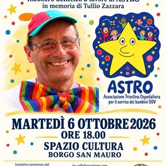

mar 6 ott · dalle 18:15
Inaugurazione “La mostra del Cuore”
A Borgo San Mauro una serata di amicizia e solidarietà: il ricordo di Tullio Zazzara e “La mostra del Cuore – Vento Inclusivo” Martedì 6 ottobre allo Spazio Cultura: alle 18.00 l’aperincontro benefico a favore di ASTRO, alle 18.15 l’inaugurazione della mostra fotografica…
 Indicazioni
Indicazioni
- Costi e prenotazioni
- Costo non indicato · Prenotazione non indicata
- Programma
- Programma da verificare. Apri la fonte ufficiale per orari e possibili aggiornamenti.
- In caso di maltempo
- Nessuna indicazione specifica pubblicata.
- Note
- Acquisito automaticamente dalla fonte.
L’EVENTO
Descrizione completa
A Borgo San Mauro una serata di amicizia e solidarietà: il ricordo di Tullio Zazzara e “La mostra del Cuore – Vento Inclusivo” Martedì 6 ottobre allo Spazio Cultura: alle 18.00 l’aperincontro benefico a favore di ASTRO, alle 18.15 l’inaugurazione della mostra fotografica dedicata al centro estivo inclusivo. Una comunità si riconosce anche nella capacità di ritrovarsi, ricordare e trasformare l’affetto in gesti concreti. Con questo spirito, martedì 6 ottobre 2026 lo Spazio Cultura di Borgo San Mauro ospiterà due appuntamenti di grande valore umano e sociale, uniti dal desiderio di essere vicini al prossimo e di costruire nuove occasioni di inclusione. La serata prenderà avvio alle ore 18.00 con l’“Aperincontro in memoria di Tullio”, dedicato a Tullio Zazzara, socio del Gruppo Speleologico Flondar recentemente scomparso. L’iniziativa è promossa dal Gruppo Speleologico Flondar APS, in collaborazione con il Gruppo Ermada Flavio Vidonis e il Lions Club Duino Aurisina. In apertura, gli amici e le associazioni ricorderanno Tullio, il suo impegno e la generosità con cui metteva il proprio tempo a disposizione degli altri. Da anni contribuiva alla diffusione della conoscenza storica e culturale del territorio attraverso le visite guidate al Mitreo, una sua grande passione, che condivideva con i visitatori. La stessa disponibilità animava il suo servizio come volontario di ASTRO – Associazione Triestina Ospedaliera per il sorriso dei bambini ODV. Nel tempo libero Tullio si dedicava ai più piccoli, portando sorrisi, attenzione e vicinanza. Il ricavato della serata sarà devoluto ad ASTRO, dando continuità a quell’impegno e trasformando il suo ricordo in un aiuto concreto. Alle ore 18.15 si terrà anche l’inaugurazione de “La mostra del Cuore – Vento Inclusivo”, che raccoglie gli scatti del centro estivo inclusivo promosso dalla Società Nautica Pietas Julia e dall’associazione Al Centro di Sé, con il sostegno della Lions Clubs International Foundation, dei Lions di Duino Aurisina e Trieste e di numerosi operatori e realtà che hanno contribuito alla realizzazione del progetto. Le immagini raccontano le esperienze vissute dai partecipanti, gli incontri e le emozioni di un percorso condiviso. La mostra offrirà l’occasione per riflettere sui risultati raggiunti e sulle prospettive per i prossimi anni, valorizzando il contributo di chi ha reso possibile il centro estivo e il significato di un’esperienza capace di creare relazioni e opportunità di partecipazione. L’esposizione, in programma dal 3 al 18 ottobre 2026, si inserisce nella rete di collaborazione dello Spazio Cultura, che coinvolge il Gruppo Ermada Flavio Vidonis, il Circolo Duinate, Ajser 2000 e la Famiglia Alpina di Duino Aurisina. Il filo conduttore della serata sarà proprio questa armonia tra associazioni: realtà con storie, competenze e attività diverse, dalla speleologia alla cultura, dalla nautica al volontariato e al servizio, che si ritrovano in un unico grande evento di amicizia e solidarietà. Ricordare Tullio, sostenere il sorriso dei bambini e raccontare un’esperienza di inclusione diventano così parte di uno stesso impegno: prendersi cura delle persone e rafforzare i legami della comunità. È anche questo a rendere meravigliosa una comunità: la capacità di unire le proprie energie e fare, insieme, qualcosa di bello per gli altri. L’appuntamento è per martedì 6 ottobre, dalle ore 18.00, allo Spazio Cultura di Borgo San Mauro.
IL PROGRAMMA
Programma e orari
Appuntamenti raccolti dalle fonti elencate. Dove manca un orario, non è ancora disponibile in questa scheda.
Programma pubblicato
- Dal 2026-10-06 al 2026-10-06
INFORMAZIONI UTILI
Prima di partire
- Controllare la fonte prima di partire.
ORGANIZZAZIONE